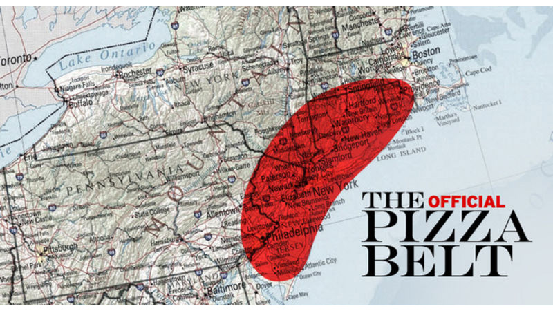

Ideation & Prototyping Week 5
New Metaphors
So for my existing product or service, I decided to go with pizza delivery. I am very passionate about pizza as an occasional maker of pizza and a resident of the pizza belt  A few years ago I lived in Maryland where the pizza was so bad that I had no idea how good I had it living in NJ where the Italians were plentiful and knew how to make tasty Italian food. That is when I learned how to make pretty good pizza and understand the nuances that people outside the area just had no idea. So anyway, besides that side story, the issue with pizza delivery is that the pizza is always a soggy mess once it arrives at your house no matter what you do. The cardboard box it comes in keeps the heat in but in turn, also traps the moisture that will ruin any chance of a crispy crust. You can fix this issue by having an oven ready to reheat your pizza a little and getting that crisp back but it's still not quite as good as walking by a pizzeria and grabbing a fresh slice. By scrolling quickly I got some cool cards to try and innovate some new ideas to fix this problem. Customer trends: what if you used gamification? technological trends: What if you could use artificial intelligence? Market trends: What if you made your customers work for you? regulation trends: what if you had access to your customer's data? This is a pretty interesting combination of cards. So how do we gamify pizza delivery?... I guess if we make our customers work for you then maybe you would have to compete with the other delivery folks. Maybe who has the fastest time to deliver their pizza or most amounts of deliveries? Who can design the best slice and get the most upvotes and orders on their design or maybe who could eat the most pizza? So if we could access our customer's data, we can figure out what kind of pizza everyone likes, where they live, commute, what they tend to eat, what time they eat, current locations, probably see some photos of what pizza types and toppings they would like most likely get. Getting this info we can use our artificial intelligence power to know what toppings to stock, which offices or blocks to set up shop, what kind of pizza to advertise on people's ad spaces, and do it right when they would probably be hungry. Minimizing the time a pizza comes out of an oven and ready to burn the roof of a hungry customer's mouth is the key to crispy unsoggy pizza. The use of a food truck that cooked pizza could be such a solution. A driver could use the info from the AI to drive a pizza truck to the perfectly calculated location at the perfect time and have perfectly calibrated pizzas on the spot ready to go and earn their pizza points. With this system we could revolutionize the pizza game, local delivery people would be running around trying to get a highly specialized pizza right into the mouths of hungry customers before they knew they would want to eat pizza that day. Now, I know when there is an open cardboard box of pizza open for the taking in the middle of an office table to draw people into a non-mandatory meeting, is no force greater than the urge to grab a slice. So when people start getting jelly about AI sending fresh great smelling pizzas to their buddies at lightning speed, they'll be ordering some slices before they know it. With so many customization options with your customers making up virally popular new pizza designs, customers will be ordering pizza every day. Invasive AI Pizza will be swimming in dough, literally.
home
while (!deck.isInOrder()) {
print 'Iteration ' + i;
deck.shuffle();
i++;
}
print 'It took ' + i + ' iterations to sort the deck.';